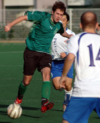
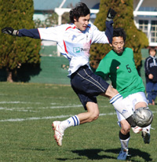
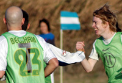
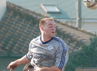
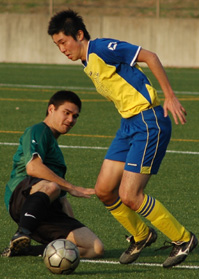
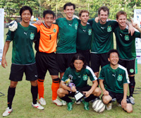
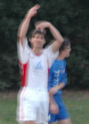

OLD STORIES - December 2007
Lions Scratched But Untamed.
Oi Futo, Saturday 22nd December,
OiFuto 1 pitch looked like a good surface after a drizzle, and Lions thought they had a major advantage against 8-men KGFC, but holidays, injuries and work, forced 3 changes that saw 2 of the defenders replaced, and a major re-shuffle necessary with Zuhair the reliable striker forced to play as a centre-back, Akira starting his first game this season after a knee injury saw him slot into an unfavoured right-back position, and Hussein also playing out of position as a left-back. more ...
HS.
|  |
|
Mike McGirr - on target again!. |
Hibs Go Top For Christmas.
Hachioji Park, Saturday 15th December,
There are no more gimmees in the TML - the Jets have had their struggles this season but they jumped all over us at Hachioji. The Hibs were disorganized and scattered in the first half, and they chased us all over - it felt like they outnumbered us on the pitch. more from Hibs...
JA.
Jets Ain't Quite Tough Enough.
Having not won a league game since August and picking up only 2 points out of the last 24 available it becomes increasingly difficult to put a positive spin on things, however, with the exception of the debacle against Sala, performances have been decent in spite of results. Losing to Hibs is, of course, nothing to be ashamed of, as they are a very good side with some outstanding wide men. Indeed, the Jets can probably take some comfort from the manner of the defeat: one-nil up at half-time despite being under almost constant pressure, and still in front after 20 second half minutes of what was now a pummeling. more from JETs ...
RK.
SickNote Special Sinks Embassy
Hachioji Park, Saturday 15th December,
A swerving, dipping, stinging, rasping 30 yard free kick from returning captain Stephen Brooke-Smith won a depleted Sala the three points in a hard-fought game against the Embassy under lights at Hachioji.
After spending weeks on the sidelines with some sort of very serious, career threatening injury, Brookie was forced to recall himself to the starting line up when only 12 Sala players made themselves available. To make matters worse he was also suffering from a bout of Saizeria induced food poisoning, to which the 300 passengers on the middle carriage of the last Sobu line train back to Tsudanuma that night can surely attest to. more ...
DB.
|  |
|
Lion, Ken Hersche upped his goal tally to 5 this season, whilst Lions haven't conceded! |
Iron, Like Lions, Against Zion
YC&AC, Sunday 16th December,
A cold, windy, and bumpy pitch was the ground for a game that saw 8 goals last season in a 4-4 draw in which Zion scored 2 late goals in the last 2 minutes.
Lions were determined to keep their good form going, and to ensure a repeat of last season does not occur. more ...
HS.
Celts frustrate BFC
|
Shosuke saved a point for BFC! |
Hachioji Park, Saturday 15th December,
A frustrating day for BFC ended on a surreal note when BFC skipper Jon Day scored the winner for France FC. Fromage frais!
Jon's winner for the French against KGFC. Not a sentence I ever imagined writing. I recall a wild-eyed Day going nose to nose with one of the French boys, yelling 'HE'S MY BROTHER!!!' after Rob Day had been launched into the bushes at YCAC. Life was simpler then. more ...
AH.
Back to the Brawing Doard
 |
|
Farewell Gilo, Sala says 'adios' to it's Kiwi/Brit founder, Giles Legg. |
Misato, Sunday 9th December,
With all the good graced timing of an unexpected visit from the grim reaper, Sala’s run of form came to an end on Sunday against a well drilled Hibs side.
Sala started as brightly as the fine winter sun that bore down on the Misato pitches and definitely looked most likely to take the lead when Toby latched onto a defensive mistake but could only pull his shot wide of the right hand post after ten or so minutes. more from Sala ...
RC.
Misato, Sunday 9th December,
Misato continues to develop into a rich and multi-faceted ecosystem - there are dry mud-flats in the center, sparse grasslands out on the sides, and the jungle encroaches along the northwestern border.
On Sunday there were also the usual gale-force winds lengthwise down the pitch. more from Hibs ...
JA.
Vags Learn No Lessons From History
YC&AC, Saturday 8th December,
A Dunkerque Tommie-like performance by British Embassy, Tommy Cooper finishing by Vags, and some debatable refereeing decisions by the Ref saw BEFC run out surprising 3-1 winners in a crucial relegation six-pointer on Saturday at YCAC. more ...
Kit.
Celts 'Never Say Die' Attitude Wins WSG Respect
(But Not the Match)
YC&AC, Saturday 8th December,
It’s been a funny week for the Geckoes. It started with a game against the Hibs where they created enough chances to win three games and lost 6-1 and finished with the Christmas Party which featured a wide selection of gloves and more shots than the rest of the TML has seen all season. In the middle was a bizarre 6-3 victory over a Celts side that refused to give up at YCAC on Saturday afternoon more ...
RK.
|  |
|
Sayonara Danny boy, The young lad bagged the first goal in his final game for BFC. |
BFC do Swiss on Mud Patch
Misato, Sunday 9th December,
Skinny boys Dan and Sho scored as BFC beat the Swiss Kickers 2-1 on Misato's cabbage patch, despite the best efforts of the ref to snatch a late equaliser for our European cousins.
We climbed the ridge. River and green fields spread out before us. A pleasant surprise. Typically, however, we were ushered to the far corner of the vast expanse of green to a distant cabbage patch. Then we clocked the ref, decked out in grey socks -- primary school-style. Pot Pourri! more ...
AH.
|  |
|
Face only a mother could love, but Tyson Masar scores goals!! |
YC&AC Shock Champs.
YC&AC, Sunday 2nd December,
"Maggie Thatcher, can you hear me? Maggie Thatcher, I have a message for you: Your boys took a hell of a beating!"
England losing to Norway in the WC Qualifiers was a shock back in 1981-it wouldn't be now of course- prompting the crazed outburst from some Norwegian whack-job. Possibly the 2nd most famous commentary about the footballing Brits in history (c'mon..."some people are on the pitch"....?) more ...
ST.
Back on Track For Old Boys
YC&AC, Sunday 2nd December,
Having shamefully surrendered their 100% record the previous weekend by failing to put a team together to face Stoneds, the Albion got their Division 3 title challenge back on track on Sunday with a hard-fought win over YCAC 2nds. more ...
TC.
|  |
|
Nice new turf at Hodogaya is a pleasure to slide on says Hibs new signing Tomo Smith. |
Shambles!
YC&AC, Sunday 2nd December,
BFC were beaten for the first time in over a year by a determined YCAC side. 1-0 at halftime. 4-2 YCAC the final score. The pre-match team talk might as well have been in Albanian. English doesn't seem to work. more ...
AH.
Andre the Destroyer
Hodogaya, Saturday 1st December,
The Hibs went into this one expecting a tough one from the Geckoes, and flattering scoreline aside, we got one. They dominated our midfield and stretched our defense all match, but were repeatedly caught by our counterattacks, especially as the game wore on.
Hotogoya Park is now a beautiful, spanking-new artificial pitch, our first nice ground of the year. With Misato lurking next week, in the first half we tried to take advantage and work short passes at every opportunity, but were repeatedly picked off by the hard-charging Gecks. more ...
JA.
Toru's Torpedo Sinks Vagabonds
Misato, Sunday 2nd,
Same opposition two weeks running, was almost like a home and away tie. Both teams seemed to have changes from the previous week due to injuries, hangovers and lads just not bothering to get out to Misato at another unearthly hour. Celts didn't get a full warm up due to the bizarre patterns of traffic in Tokyo's outer-rims, it was like spurs defence, didn't move for about 30 minutes and then suddenly opened up to allow anyone through. more ...
GD.
VICTORIOUS IN PHUKET |
|  |
|
Hibs won their 2nd Phuket 7's Cup in a row beating the Shanghai Krauts, more |
Lions Roar On!
Misato, Sunday 2nd,
The first Sunday of December was blessed by beautiful weather, and was to hold the awaited clash in Division 2 between 2 unbeaten teams, Lions, with a 100% record, and Maritizio, unbeaten in 4 games.
Lions lined up with their full squad, whilst Maritizio although looking strong, did have a guest keeper from Vags between the posts.
Maritizio started the game strongly, and showed they meant business by notching the first attempt on goal via a powerful header from their tall striker, from the edge of the box, but not troubling Lions' safe hands, Orlando (aka Spiderman). more ...
HS.
Reservoir Dogs
Misato, Sunday 2nd December,
Vagabonds lost 2-0 to Kanto Celts between 10am and 12pm today. It has to be considered one of the poorest Vags performances of the season yielding a record number of injuries, about 6 players, and culminating in a reservoir dogs like bloody final scene in the Celts six yard box. more ...
GQ.
Swiss Struggle Past Jets.
|  |
|
Kirk signal a change after scoring & pulling his hammy! |
OiFuto, Saturday 1st December,
Swiss vs. Jets on Saturday, great day for a match at Oifuto as the pitch appeared to have been unused following the light rain on Friday evening. Other than the strange "circle" in midfield which even caused the referee to reprimand encroachers for being aggressive, the smooth surface at Dai 1 is typically a joy to play on. Unfortunately, this writer's age is becoming more of a problem as covering the expansive pitch at Oifuto has me begging for 5 a side on Thursday nights. more from Swiss...
KN.
Another game, another narrow defeat. The Saitama Jets are a team who are striving to keep their season alive to the very end with another exciting relegation battle. The Jets aren’t panicking yet, with over half the season still to play there is still time to force a couple of scrappy wins and prolong the agony, or if you prefer, adventure, for yet another season. more from JETs...
RK.